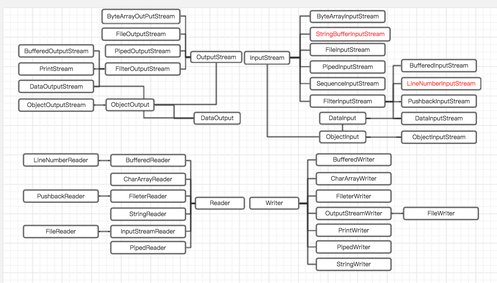

I/O
I/O 是 input 和 output 的简写，Java API 中，可以读入字节或字符序列的对象称为输入流，可以写入字节或字符序列的对象称为输出流。其来源地和目的地可以是文件，也可以是 socket、http、数组甚至是两个线程之间。
I/O 包下有几十个类文件，大概分为以下几种：
- 由
InputStream、OutputStream、Reader、Writer为代表的 I/O 类 - 与文件系统相关的泪，例如
File、FileFilter、RandomAccessFile等 - 序列化相关的类
- 其他，例如工具类、异常类
流家族
从InputStream和 OutputStream 中继承的类是用来处理字节流。从 Reader 和Writer继承的类是用来处理 Unicode 字符，这些类的读写操作都是基于 Unicode 码元的。通过 InputStreamReader 和OutputStreamWriter可以将字节流转为字符流。
流家族体系

上图中，红色的类表示已被弃用。
字节流
InputStream
InputStream 有几个常用的方法 ：
- mark :
mark方法用于标记当前读取的位置，与reset方法配合使用。 - reset : 返回
mark标记的位置，重新从该位置读取字节 - markSupported : 是否支持 mark/reset
- available : 剩余未读取的字节数
- skip : 跳过并丢弃指定的字节数
- read : 读取字节
| 类 | markSupported | skip | 说明 |
|---|---|---|---|
| ByteArrayInputStream | 支持 | 支持 | 输入源，将 byte[] 作为输入源的类 |
| FileInputStream | 支持 | 支持 | 输入源，将文件作为输入源的类 |
| PipedInputStream | 不支持 | 支持 | 输入源，用于进程间通信，与 PipedOutputStream 配合使用 |
| SequenceInputStream | 不支持 | 支持 | 将多个输入源合并成一个输入源，available方法只返回当前输入源的available |
FilterInputStream
继承自 FilterInputStream 子类是装饰器类，它们不能自己产生字节序列，需要配合输入源才能使用，它们的主要作用是增加输入流的功能。在别的编程语言里，诸如缓冲机制和预览等细节都是自动处理的，相对而言，Java 就比较麻烦，必须配合装饰器类才能实现。但是这种方式带来极大的灵活性。
| 类 | markSupported | skip | 说明 |
|---|---|---|---|
| BufferedInputStream | 支持 | 支持 | 给输入流增加缓冲机制 |
| PushbackInputStream | 不支持 | 支持 | 给输入流增加推回功能，即将读取的字节推回到缓冲区 |
| DataInputStream | 不支持 | 支持 | 允许应用程序以与机器无关方式从底层输入流中读取基本 Java 数据类型，一般与 DataOutputStream 配合使用，另外 DataInputStream 读取时采用的 Java 版的 UTF-8 编码，与标准 UTF-8 不同。所以 DataInputStream 读取的字节流必须时通过 DataOutputStream 写入的，不然会出问题 |
OutputStream
OutputStream有几种常用的方法：
| 类 | 说明 |
|---|---|
| ByteArrayOutputStream | 将输出流转化为byte[] |
| FileOutputStream | 文件输出流 |
| PipedOutputStream | 管道输出流，与 PipedOutputStream 配合使用 |
FilterOutputStream
类似于 FilterInputStream，FilterOutputStream 也是装饰器类的基类。
| 类 | 说明 |
|---|---|
| BufferedOutputStream | 给输出流增加缓冲机制 |
| PrintStream | 打印输出流 可直接输出至文件 (里面封装了 FileOutputStream)自动刷新功能，遇到 \n 或者写入一个 byte 数组之后自动调用 flush 方法 可方便打印各种数据值表示形式 与其他输出流不同，它产生的 IOException 异常会被自身函数捕获，可以通过 checkError 检查是否发生过异常 通过 format 方法，支持格式化输出 打印的字符使用平台默认字符编码转换为字节，也可以指定编码类型 null 值会被转为 null 字符，布尔类型会被转为 true 和false字符 |
| DataOutputStream | 允许应用程序以与机器无关方式写入基本 Java 数据类型，配合 DataInputStream 使用。 |
ObjectOutput 和 ObjectInput
ObjectInputStream和 ObjectOutputStream 用于对象的序列化，可以将任何 Java 类型包括对象，序列化成字节序列。
字符流
Reader
Reader 用于读取字符流的抽象类，使用字符流读取文件，比字节流更高效。可通过 InputStreamReader 将字节流转换为字符流。
| 类 | markSupported | skip | 说明 |
|---|---|---|---|
| CharArrayReader | 支持 | 支持 | 输入源，将 char[] 作为输入源的类 |
| StringReader | 支持 | 支持 | 输入源，将 String 作为输入源的类 |
| PipedReader | 不支持 | 支持 | 类似PipedInputStream |
| FileReader | 不支持 | 支持 | 类似 FileInputStream，实际上就是在FileInputStream 外面套了 InputStreamReader 类 |
| InputStreamReader | 不支持 | 支持 | 将字节流转为字符流，可以指定字符编码 |
| BufferedReader | 支持 | 支持 | 类似于BufferedInputStream，带有缓冲机制的字符流，需要提供输入源 |
| PushbackReader | 不支持 | 支持 | 类似PushbackInputStream |
Writer
| 类 | 说明 |
|---|---|
| CharArrayWriter | 将输出流转为 char[]。null 值被转为 null 字符串 |
| StringWriter | 将输出流转为 String。null 值被转为 null 字符串 |
| PipedWriter | 类似PipedOutputStream |
| PrintWriter | 类似PrintStream |
| OutStreamWriter | 将字节流转为字符流，可以指定字符编码 |
| BufferedWriter | 类似于BufferedOutputStream，带有缓冲机制的字符流，需要提供输入源 |